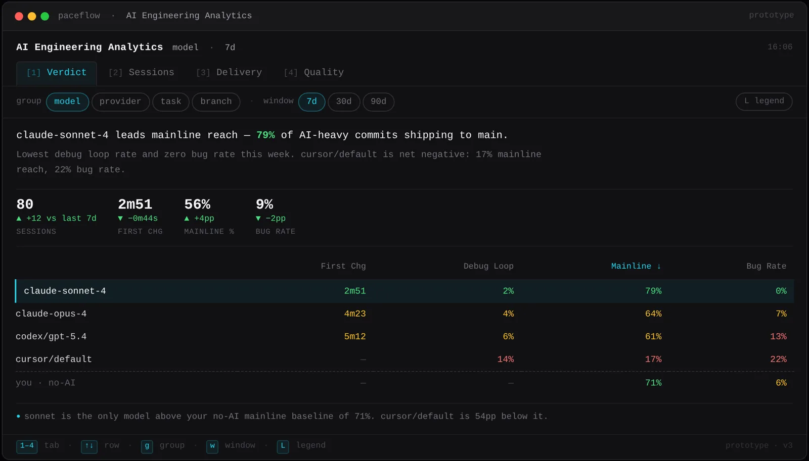

Paceflow · Product design · 2026
Terminal dashboard for Paceflow's open-source CLI
Paceflow's CLI tells engineers whether their AI-assisted code actually reaches production and holds up. I designed the interactive prototype for its terminal dashboard: four report views, keyboard and mouse navigation, and a colour system where green, amber and red appear only when a metric crosses a threshold.
The prototype is the design reference the production Rust TUI implements.
- Information design
- Interaction design
- HTML / CSS / JS prototype